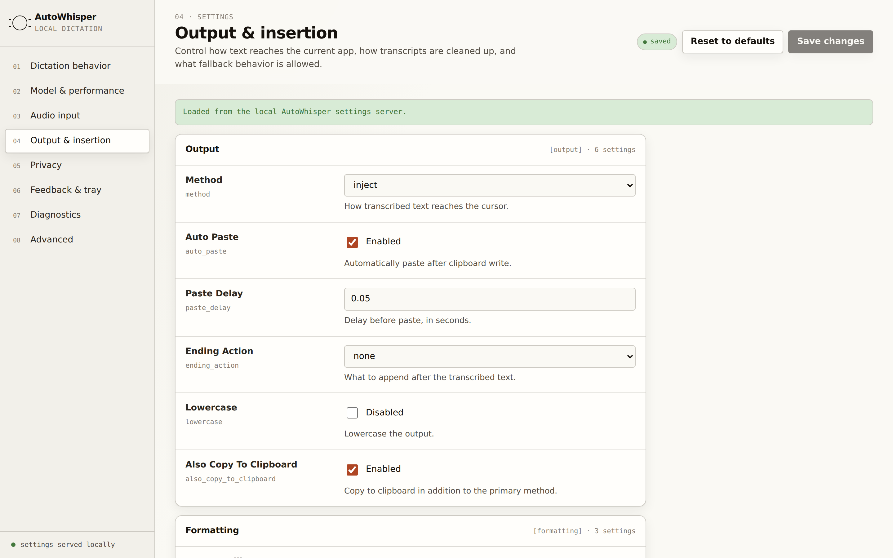
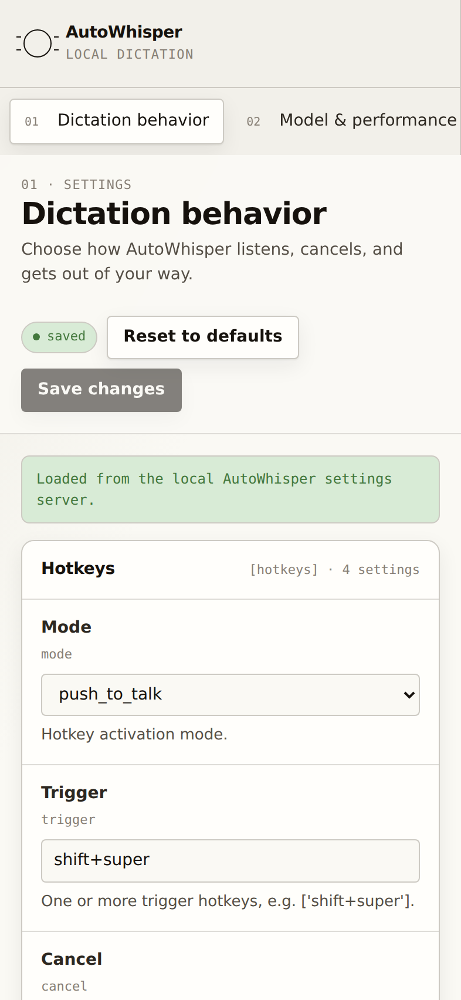

Local-first by default
Audio is processed on-device with local Whisper models. No cloud transcription service is required.
Offline speech-to-text for desktop power users
AutoWhisper is an offline, local-first dictation app powered by whisper.cpp. It is built for fast push-to-talk transcription, local models, and a privacy-first workflow.
v0.7.1 macOS build: AutoWhisper-macOS-v0.7.1.zip, Notarized Developer ID, stapled, and Gatekeeper accepted.
Audio is processed on-device with local Whisper models. No cloud transcription service is required.
Use push-to-talk dictation and insert text into your desktop workflow without switching contexts.
Linux packages and a notarized macOS app bundle are the current distribution targets.
The real interface
Captured from the actual app — a local, framework-free settings UI served by AutoWhisper itself, on desktop and at phone width.



Where it goes next
Design previews for the native iOS, Android, and watchOS apps on the roadmap. Same local-first rule: speech is processed on your devices.


Linux install
AutoWhisper started as a Linux-first desktop dictation tool and keeps that install path simple.
sudo add-apt-repository ppa:primemanifold/autowhisper
sudo apt update
sudo apt install autowhisperPrivacy posture
AutoWhisper is designed around offline transcription, local configuration, and transparent release artifacts. The project repository is at github.com/primemanifold/autowhisper.